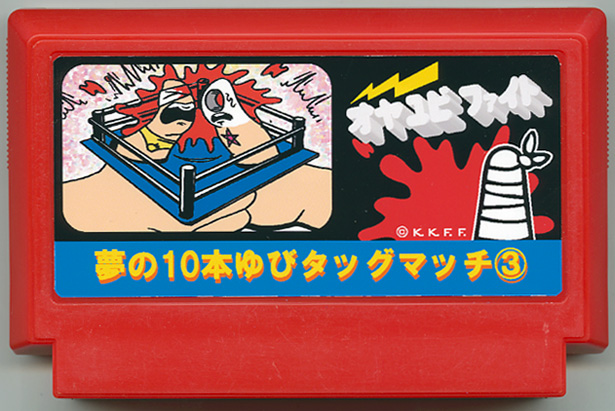

" オヤユビファイト "
加藤 しずえ / ガチャガチャ業
日頃、コントローラーで鍛えた君のその自慢の指の筋力で挑め！
親指レスリング（指相撲）が開幕。幾多の死闘（突指）を乗り越え、親指強度を上げて、得意の必殺技で、どんな親指もリングの底に押さえ込んでやろう！ ラストステージはつめ水虫菌親指将軍との壮絶なファイトが待っているぞ。さぁ、リングの下で手をつないではじめよう！
※親指を押さえ込まれた場合でも、10カウント成立前に「ロープ」に小指 をかければ、カウントを中断させることができます。